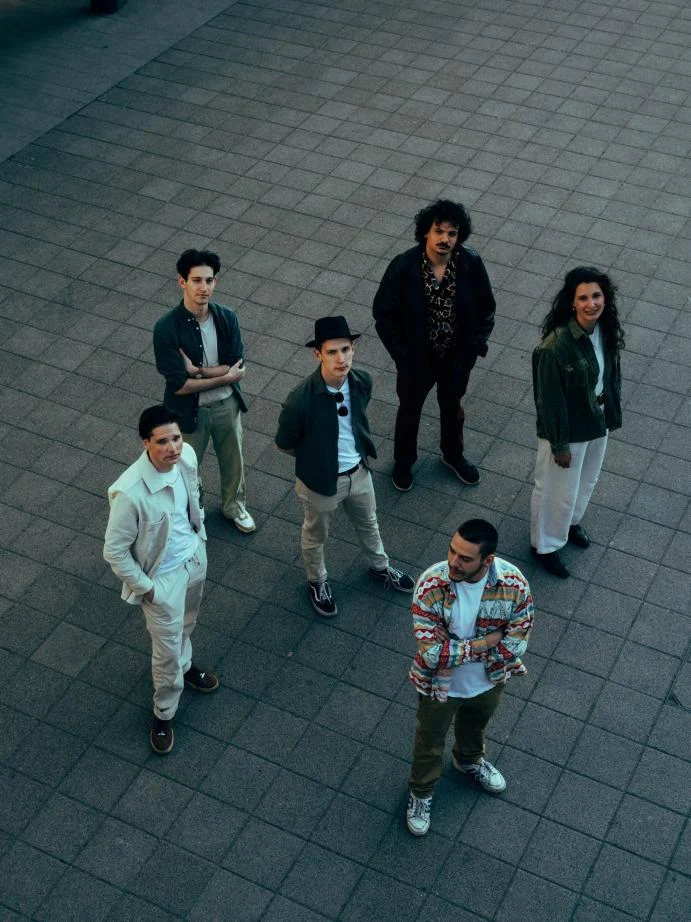
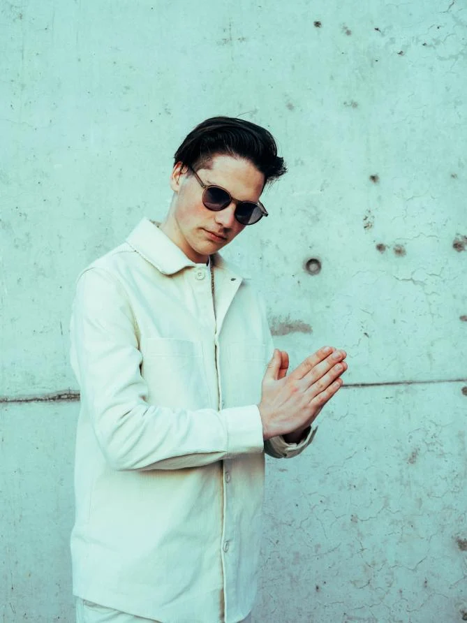
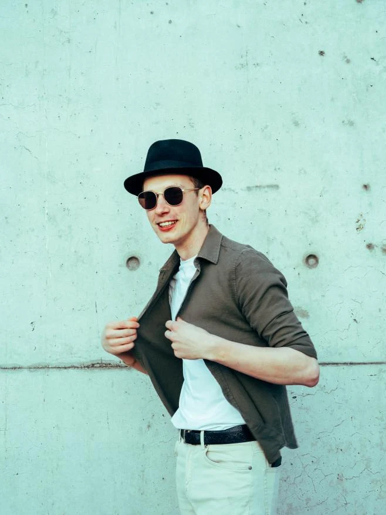

Kezdjük a Hölgyekkel! Kovács Adél elsősorban tenorszaxofonon fog zenélni a zenekarban. Játéka kifinomult, blattolása magas szintű, hangszíne egetrengető. Zenélés mellett ékszerkészítéssel, lovaglással foglalkozik és a csapat legszebb tagjaként is aktívan szerepet vállal.
Rólunk

A Szmötty egy olyan formáció, ami a szilárd és a folyékony halmazállapot között létezik. Képesek vagyunk nagyon konkrét ritmikai formákat önteni és emellett meglepően folyós anyagot kikovácsolni hangszereinkből. Barátaink a páratlan és prímszámok, mint például a négy. Forradalmi hozzáállásunk van a matematikához. Ez az a tudományág, melyhez intellektuálisan kell hozzáállni. Az eredményhez nem tudás, hanem tapasztalat és érzés kell. Brit tudósok szerint a 11/8 egy igen nehezen kiszámolható feladvány, de mi csupán érzésből meg tudjuk oldani. Nem is beszélve a 3:4 és a 21/8 egyenletekről. Célunk, hogy megismertessük közönségünkkel az instrumentális zene sokszínűségét. A páratlan lüktetések varázsát, a fúvós szekció elsöprő erejét, az improvizáció csodáját és emellett lágy dallamok, táncolható arrange-ok, szívmelengető szólamvezetések, disszonáns akkordok és virágos réteket megidéző, tonális harmóniák felemelő világát jelenítjük meg a produkció előadása során.
Szabó Kristóf altszaxofonon képviseli közös zenénket. A Hakumba zenekar tagjaként az afrobeat és balkános hangulatú fúvós témák világából érkezett hozzánk. Jelenléte megnyugtató és felemelő. A béke szigete, köré épült.
Bujdosó Áron a zenekar trombitása és legmenőbben kinéző embere. Legyenek szívesek csak megnézni a képet. Egyszerűen csak badass. Nade nem csak megjelenésben brillírozik, de a játéka is egészen elképesztő. A Duckshell zenekar-ból érkező Mr. Bujdosó szívmelengető melódiákat fog játszani a színpadon Önöknek.
Inczédy Hunor a zenekarunk mélyfrekvencia felelőse. Tehát basszusgitáros. Nem tudom felsorolni milyen zenekarokban játszik mert túl sok. Kinézete csak egyszerűen smash. Játékmódja improvizatív, "tight", interaktív és kiemelkedően tudatos. Fogadják őt sok-sok szeretettel.
Nedving Bonifác zenéje fogja kényszeres táncolásra ösztönözni az Önök lábait. Dobosként zenekarunkban a kellően fontos ritmikáért felel. Ő a zenekar szigmája. Bár szerény személyem már boomer ezekhez a kifejezésekhez, de azt mondták, hogy ez így megállja a helyét

Beke Barnabás a zenekarvezető és billentyűs. Játéka enyhe. Hangszínei kibírhatóak. Posztjai szánalmasak. Zenei ízlése kivételesen vállalhatatlan. Mégis ő a főnök. Segítsenek neki kimászni ebből a nagyon mély gödörből, amibe bele esett, hogy a zenekar jövője stabil lábakon tudjon állni.
